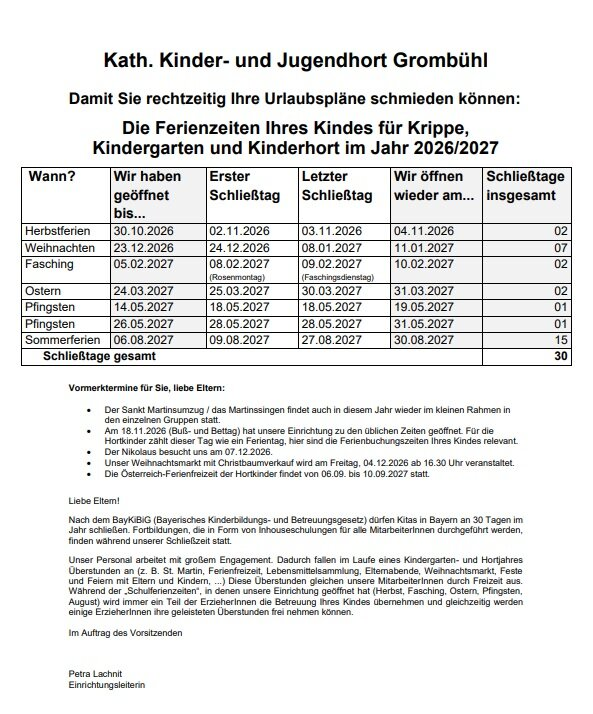

Aktuelles
Hier finden Sie aktuelle Termine und Informationen.
Aktuelle Termine
Vormerktermine für Sie, liebe Eltern:
- 18Nov 2026
Buß- und BettagUnsere Einrichtung hat zu den üblichen Zeiten geöffnet. Für die Hortkinder zählt dieser Tag wie ein Ferientag, hier sind die Ferienbuchungszeiten Ihres Kindes relevant.
- 04Dez 2026
Weihnachtsmarkt mit ChristbaumverkaufFreitag, 04.12.2026, ab 16:30 Uhr.
- 07Dez 2026
Der Nikolaus besucht unsAm 07.12.2026.
- 06.–10.Sep 2027
Österreich-FerienfreizeitHortDie Ferienfreizeit der Hortkinder findet vom 06.09. bis 10.09.2027 statt.
Aktuell stehen keine weiteren Termine an.
Für diesen Bereich stehen gerade keine eigenen Termine an. Termine für das ganze Haus sehen Sie unter „Alle“.
Schließtage
Die nächsten Schließtage und alle Ferienzeiten für 2026/2027 finden Sie unten bei den Schließtagen.
Zu den DownloadsLiebe Eltern!
Alle Elternbriefe an einem Ort – der neueste steht oben.
Schließtage, Fortbildungen und ÜberstundenKita-Jahr 2026/27
Nach dem (Bayerisches Kinderbildungs- und Betreuungsgesetz) dürfen Kitas in Bayern an 30 Tagen im Jahr schließen. Fortbildungen, die in Form von für alle Mitarbeiterinnen und Mitarbeiter durchgeführt werden, finden während unserer Schließzeit statt.
Unser Personal arbeitet mit großem Engagement. Dadurch fallen im Laufe eines Kindergarten- und Hortjahres Überstunden an (z. B. St. Martin, Ferienfreizeit, Lebensmittelsammlung, Elternabende, Weihnachtsmarkt, Feste und Feiern mit Eltern und Kindern …). Diese Überstunden gleichen unsere Mitarbeiterinnen und Mitarbeiter durch Freizeit aus.
Während der „Schulferienzeiten“, in denen unsere Einrichtung geöffnet hat (Herbst, Fasching, Ostern, Pfingsten, August), wird immer ein Teil der Erzieherinnen und Erzieher die Betreuung Ihres Kindes übernehmen und gleichzeitig werden einige Erzieherinnen und Erzieher ihre geleisteten Überstunden freinehmen können.
Im Auftrag des Vorsitzenden
Petra Lachnit
Einrichtungsleiterin
Kein Elternbrief gefunden.
Schließtage 2026/2027
In allen Abteilungen des Hauses haben wir an maximal 30 gleichen Tagen im Jahr geschlossen.
| Wann? | Wir haben geöffnet bis … | Erster Schließtag | Letzter Schließtag | Wir öffnen wieder am … | Schließtage |
|---|---|---|---|---|---|
| Herbstferien | 30.10.2026 | 02.11.2026 | 03.11.2026 | 04.11.2026 | 02 |
| Weihnachten | 23.12.2026 | 24.12.2026 | 08.01.2027 | 11.01.2027 | 07 |
| Fasching | 05.02.2027 | 08.02.2027(Rosenmontag) | 09.02.2027(Faschingsdienstag) | 10.02.2027 | 02 |
| Ostern | 24.03.2027 | 25.03.2027 | 30.03.2027 | 31.03.2027 | 02 |
| Pfingsten | 14.05.2027 | 18.05.2027 | 18.05.2027 | 19.05.2027 | 01 |
| Brückentag nach Fronleichnam | 26.05.2027 | 28.05.2027 | 28.05.2027 | 31.05.2027 | 01 |
| Sommerferien | 06.08.2027 | 09.08.2027 | 27.08.2027 | 30.08.2027 | 15 |
| Schließtage gesamt | 30 | ||||
Damit Sie rechtzeitig Ihre Urlaubspläne schmieden können: Kinderkrippe, Kindergarten und Kinderhort haben die gleichen Schließtage. Schließtage als PDF herunterladen


Original-AushangZum Vergrößern antippen